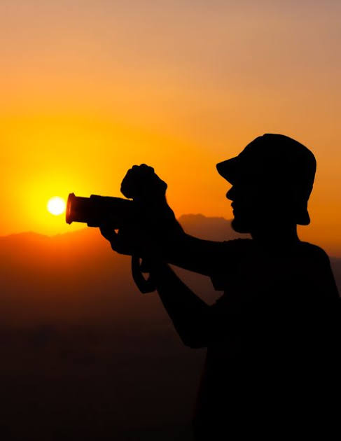
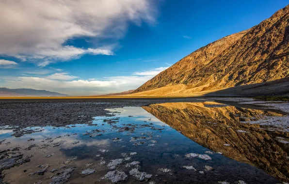
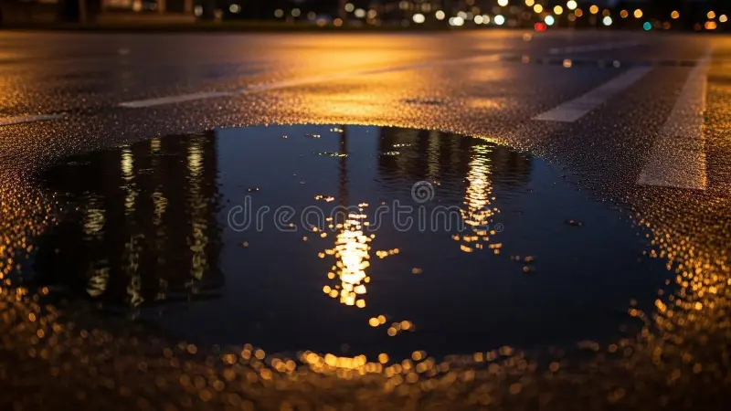
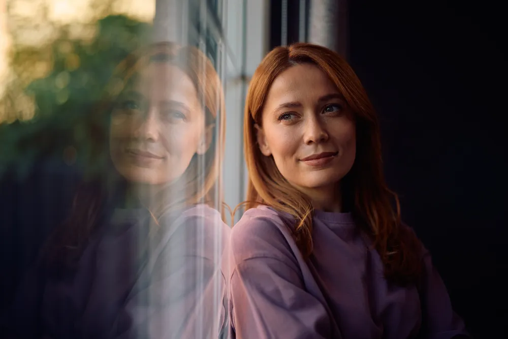
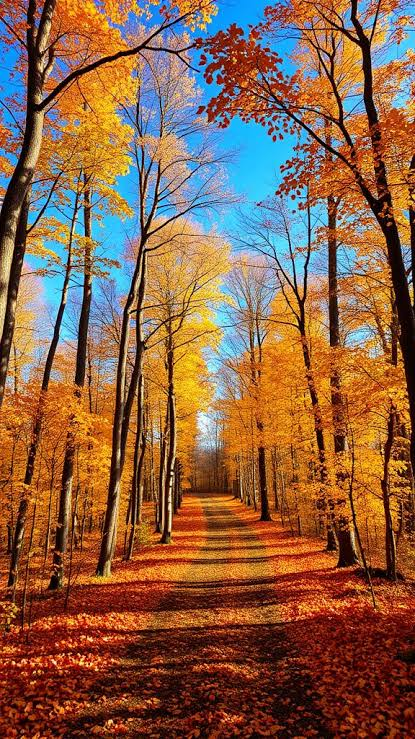

Небольшой сайт о том, как научиться замечать свет, момент и композицию
даже на обычную камеру смартфона.
О фотографии
Фотография — это способ зафиксировать мгновение и рассказать историю
без слов. Хороший кадр рождается не в камере, а в голове фотографа: сначала
нужно увидеть сюжет, а уже потом нажать на кнопку.

Закатный свет — один из самых выразительных инструментов в арсенале фотографа.
Почему это важно
Умение видеть свет и композицию пригодится не только в творчестве, но и в
повседневной жизни — от оформления соцсетей до презентаций на работе.
Три кита хорошего кадра
Свет — мягкий или жёсткий, тёплый или холодный.
Композиция — правило третей, линии, ритм.
Момент — то, что нельзя повторить.
Жанры фотографии
Жанр задаёт настроение и правила. Ниже — несколько направлений, с которых
удобно начинать.
Пейзаж
Пейзажная съёмка учит терпению: нужно дождаться нужного света и погоды.

Отражения в воде — классический приём в пейзаже.
Портрет
В портрете главное — эмоция и взгляд. Техника вторична.
«Фотография — это правда, а кино — это правда двадцать четыре раза в секунду».
Стрит-фотография
Съёмка на улице без постановки: ловим случайные сцены и живые эмоции.
Что взять с собой
Компактную камеру или смартфон;
Запасной аккумулятор;
Удобную обувь и терпение.
Оборудование
Начинать можно с чего угодно — главное, чтобы камера была под рукой.
Ниже — базовый набор для старта.
Камера
Подойдёт даже смартфон с хорошей матрицей.
Объектив
Универсальный «полтинник» (50 мм) — отличный выбор для портретов и прогулок.
Штатив
Помогает на длинных выдержках и при съёмке пейзажей на рассвете.
Что НЕ нужно покупать новичку
Дорогую полнокадровую камеру;
Набор из десяти объективов;
Профессиональный свет — пока хватит окна.
Галерея
Несколько кадров для вдохновения — снято в разных жанрах и в разное время суток.

Ночной город: длинная выдержка и отражения.

Портрет у окна: мягкий естественный свет.

Осенний лес — идеальное время для пейзажа.
Полезные ссылки
Материалы, которые помогут начинающему фотографу расти быстрее:
Unsplash
— огромная библиотека бесплатных фотографий для вдохновения и референсов.
Фотожик
— уроки, статьи по обработке и обзоры техники на русском языке.
DPReview
— авторитетный международный сайт с обзорами камер и объективов.